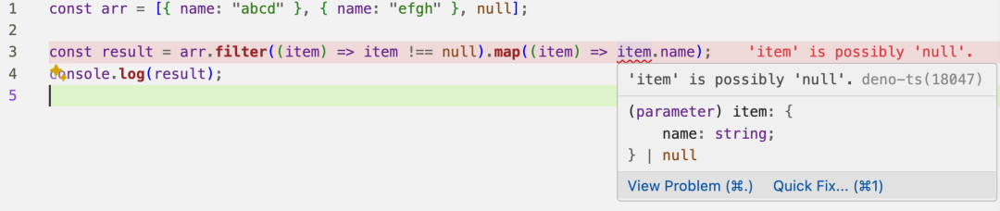

2024-07-14 09:11:31 · YinHao
链式调用是一种编程技巧，它允许你将多个操作链接在一起，形成一个链。在 JavaScript 中，许多数组方法都返回一个新的数组，这使得你可以将多个方法链接在一起。
我们来看一个在工作中常见的示例，先过滤掉为空的元素，再返回元素的某个属性：
const arr = [{ name: "abcd" }, { name: "efgh" }, null];
const result = arr.filter((item) => item !== null).map((item) => item.name);
console.log(result);
如果是 JavaScript 代码，一切好说，但当我们使用 TypeScript 时，IDE 会提示报错，因为在 map 里 TypeScript 分析，无法确定 filter 之后的数组元素已经排除掉了 null：
这种情况下，最简单的处理是使用非空断言符!，明确告诉 TypeScript 这个值一定不是 null 或者 undefined：
const result = arr.filter((item) => item !== null).map((item) => item!.name);
console.log(result);
非空断言符非常好用，但可能会掩盖真正的问题，因为它是在用我们开发者的信用为代码背书。平时我们应该尽量避免使用它。当然，像这种一览无余的示例除外。
断言一次可能还无所谓，如果我们的链式调用再加个排序，需要多次断言，你可能就不会太爽了：
const result = arr
.filter((item) => item != null)
.sort((item) => (item!.name > item!.name ? 1 : -1))
.map((item) => item!.name);
那么，还有没有更优雅一点的方式呢？
答案是有的。那就是使用类型保护：
const result = arr
.filter((item): item is User => item !== null)
.map((item) => item.name);
console.log(result);
在这段代码中，filter 方法使用了类型谓词 item is User。这告诉 TypeScript，如果 filter 方法返回 true，那么 item 一定是 User 类型，不会是 null。这样，在 map 方法中，TypeScript 就能知道 item 一定不为 null，因此你可以安全地访问 item.name。 这种写法看起来有些奇怪，但将这个匿名函数提取出来，就是我们熟悉的类型保护了：
const isNotNull = (item: any): item is User => {
return item !== null;
};
const result = arr.filter(isNotNull).map((item) => item.name);
console.log(result);
此时就是再加一个 sort 也不怕了：
const result = arr
.filter(isNotNull)
.sort((item) => (item.name > item.name ? 1 : -1))
.map((item) => item.name);
只不过，虽然这样看起来似乎更靠谱些，但是我们可能更喜欢使用 Boolean 写出这样的代码：
const result = arr.filter(Boolean).map((item) => item.name);
console.log(result);
可惜 TypeScript 没有针对 filter(Boolean) 做断言的优化。
折中下，我们自己封装一个支持泛型的 filterNone 函数来复用逻辑：
type User = { name: string };
const filterNone = <T>(item: any): item is T => {
return item !== null && item !== undefined;
};
const result = arr.filter(filterNone<User>).map((item) => item.name);
console.log(result);